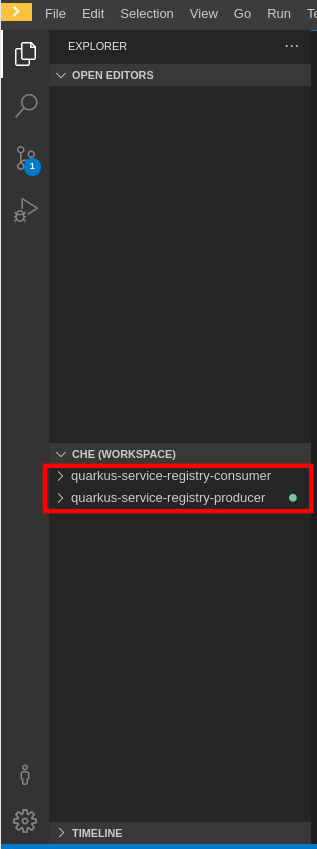
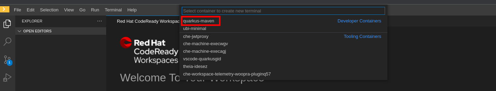
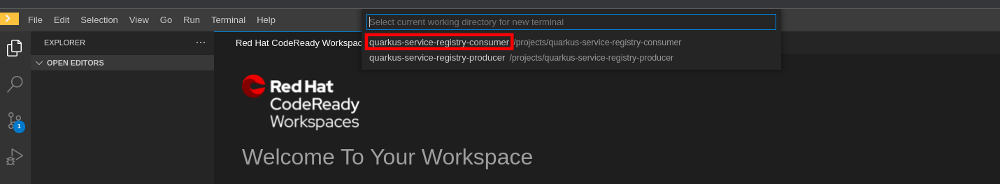
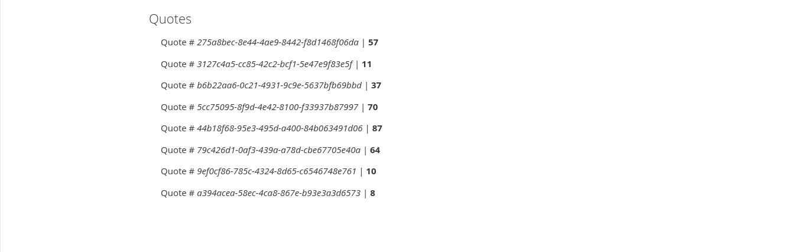
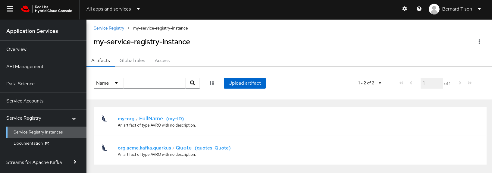

Use Quarkus applications with Streams for Apache Kafka and OpenShift Service Registry
As a developer of applications and services, you can connect Quarkus applications to Kafka instances in OpenShift Streams for Apache Kafka and Service Registry instances in OpenShift Service Registry. This makes it easy for development teams to store and reuse schemas in event streaming architectures.
Quarkus is a Kubernetes-native Java framework made for Java virtual machines (JVMs) and native compilation, and optimized for serverless, cloud, and Kubernetes environments.
Quarkus is designed to work with popular Java standards, frameworks, and libraries like Eclipse MicroProfile and Spring, as well as Apache Kafka, RESTEasy (JAX-RS), Hibernate ORM (JPA), Infinispan, Camel, and many more.
In this workshop you use CodeReady Workspaces on the Developer Sandbox for Red Hat OpenShift to inspect and run the Quarkus applications.
The Developer Sandbox for Red Hat OpenShift provides you with a private OpenShift environment in a shared, multi-tenant OpenShift cluster that is pre-configured with a set of developer tools.
CodeReady Workspaces is an in-browser IDE that delivers consistent developer environments on Red Hat OpenShift.
Get access to the Developer Sandbox
You can spin up and access your Developer Sandbox with your Red Hat account (the same account you used to create an OpenShift Streams for Apache Kafka instance).
-
In a browser window, go to developers.redhat.com/developer-sandbox/get-started.
-
Click the Launch your Developer Sandbox for Red Hat OpenShift button.

-
If required, log in in with your Red Hat account username and password.
-
If this is the first time you use the Developer Sandbox, your account needs to be set up. This includes a phone verification step to reduce the creation of fraudulent accounts. After this step it will take a couple of seconds to set up the sandbox.
Click the Start using your sandbox button to launch the sandbox.
-
Click DevSandbox to log into your sandbox.
-
You are redirected to the Developer Perspective of your Sandbox OpenShift environment. Feel free to take or skip the Get Started tour.

Start CodeReady Workspaces
-
In the Sandbox OpenShift web console, click on the Applications icon on the top menu. In the drop-down pane, select CodeReady Workspaces to launch your instance of CodeReady Workspaces.

-
If necessary, click DevSandbox to log in. The CodeReady Workspaces landing page opens in a new tab of your browser. Make sure the Create Workspace page is selected.

-
In the Git Repo URL text box on the Quick Access tab, enter the following url to open the workspace for this lab:
https://github.com/btison/quarkus-service-registry-quickstart-crw -
Click Create & Open to create the workspace.
-
The creation and startup of the workspace will take a few moments. Once the workspace is created and started, you are redirected to the main IDE page.

-
To complete the import of the workspace, click Yes, I trust in the popup box asking if you trust the authors of the github repo.

You can ignore the popup box asking to import the recommended extensions.
Notice that your workspace contains two projects corresponding to the two Quarkus applications used in this workshop.

Configure and run the Quarkus consumer application
In this workshop you will build and run the Quarkus application from a terminal window in CodeReady Workspaces. But before doing so, the Quarkus application needs to be configured.
To enable your Quarkus applications to access a Kafka instance, configure the connection properties using the Kafka bootstrap server endpoint. To access a Service Registry instance, configure the registry endpoint connection property with the Core Registry API value.
Access to the Service Registry and Kafka instances is managed using the same service account and SASL/OAUTHBEARER token endpoint. For Quarkus, you can configure all connection properties using the application.properties file. This example sets environment variables and references them in this file.
Quarkus applications use MicroProfile Reactive Messaging to produce messages to and consume messages from your Kafka instances in OpenShift Streams for Apache Kafka. For details on configuration options, see Using Apache Kafka with Reactive Messaging in the Quarkus documentation.
-
In your CodeReady Workspace, open a terminal for the
quarkus-service-registry-consumerapplication.
In the top menu, select Terminal → Open Terminal in specific container.In the popup window, select quarkus-maven. In the next popup, select quarkus-service-registry-consumer to open the terminal.
 -
In the terminal window, change directory to the
consumerdirectory.cd consumer
-
In the terminal, set the following environment variables to use your Kafka and Service Registry instances with the Quarkus application. Replace the values with your own server and credential information which you copied before from console.redhat.com:
-
The <bootstrap_server> is the bootstrap server endpoint for your Kafka instance.
-
The <core_registry_url> is the Core Registry API endpoint for your Service Registry instance.
-
The <oauth_token_endpoint_uri> is the SASL/OAUTHBEARER token endpoint.
-
The <client_id> and <client_secret> are the generated credentials for your service account.
Setting environment variables for server and credentials:
export BOOTSTRAP_SERVER=<bootstrap_server> export REGISTRY_URL=<core_registry_url> export OAUTH_TOKEN_ENDPOINT_URI=<oauth_token_endpoint_uri> export CLIENT_ID=<client_id> export CLIENT_SECRET=<client_secret>
-
-
In the Quarkus consumer source code, review the
/src/main/resources/application.propertiesfile in theconsumersub-folder to understand how the environment variables you set in the previous step are used. This example uses thedevconfiguration profile in theapplication.propertiesfiles. -
In the terminal, launch the Quarkus consumer application with the maven
quarkus:devgoal. This will start the application in Quarkus development mode.mvn compile quarkus:dev -
When the application is started up, a popup appears in the bottom right corner of the IDE window, prompting to open a browser tab to the application. Click Open In New Tab to open the tab.

This opens a browser tab to the main application window of the consumer application. Once the consumer application starts to consume messages from the
quotestopic they will appear in the browser window.
Configure and run the Quarkus producer application
-
In your CodeReady Workspace, open a new terminal for the
quarkus-service-registry-producerapplication.
In the top menu, select Terminal → Open Terminal in specific container. In the popup window, select quarkus-maven. In the next popup, select quarkus-service-registry-producer to open the terminal. -
In the terminal window, change directory to the
producerdirectory.cd producer -
In the terminal, set the following environment variables to use your Kafka and Service Registry instances with the Quarkus application. Replace the values with your own server and credential information which you copied before from console.redhat.com:
-
The <bootstrap_server> is the bootstrap server endpoint for your Kafka instance.
-
The <core_registry_url> is the Core Registry API endpoint for your Service Registry instance.
-
The <oauth_token_endpoint_uri> is the SASL/OAUTHBEARER token endpoint.
-
The <client_id> and <client_secret> are the generated credentials for your service account.
Setting environment variables for server and credentials:
export BOOTSTRAP_SERVER=<bootstrap_server> export REGISTRY_URL=<core_registry_url> export OAUTH_TOKEN_ENDPOINT_URI=<oauth_token_endpoint_uri> export CLIENT_ID=<client_id> export CLIENT_SECRET=<client_secret>
-
-
In the Quarkus producer source code, review the
/src/main/resources/application.propertiesfile in theproducersub-folder to understand how the environment variables you set in the previous step are used. This example uses thedevconfiguration profile in theapplication.propertiesfiles.
Note the settingmp.messaging.outgoing.quotes.apicurio.registry.auto-register=true: this setting ensures that the Avro Schema is published to the Service Registry instance if the schema is not yet present in the instance. -
In the terminal, launch the Quarkus producer application with the maven
quarkus:devgoal. This will start the application in Quarkus development mode.mvn compile quarkus:dev -
When the application is started up, a popup appears in the bottom right corner of the IDE window, prompting to add a redirect to port 8081. You don’t need this for this workshop, so click no.
-
Once the producer application is started, it produces a quote messages to the
quotestopic on your Kafka instance every five seconds. These messages are consumed by the consumer application. The quotes appear in the browser tab pointing to thequotes.htmlpage of the consumer application (you might need to refresh the page to actually see the quotes).
Inspect the Avro schema in the Service Registry instance
The Quarkus producer application published the Avro schema corresponding to the quotes Kafka messages to the Service Registry instance, from where it is downloaded by the consumer application.
-
In a browser window, navigate to your Service Registry instance in the Application Services → Service Registry → Service Registry Instances section of console.redhat.com. Open the Service Registry instance.
-
Check that the Service registry instance contains a schema corresponding to the Avro schema of the quotes Kafka messages.
 -
Click on the schema name to inspect the metadata and the contents of the schema. Note that the schema is identical to the Avro schema in the source code of the producer application, in the
src/main/avrodirectory.
Clean up
-
In the CodeReady Workspace IDE, stop the consumer and producer application by entering
Ctrl + Cin the application terminal. -
If you no longer require your instance of Service Registry and Streams for Apache Kafka, you can delete them from the Application Services section of console.redhat.com.